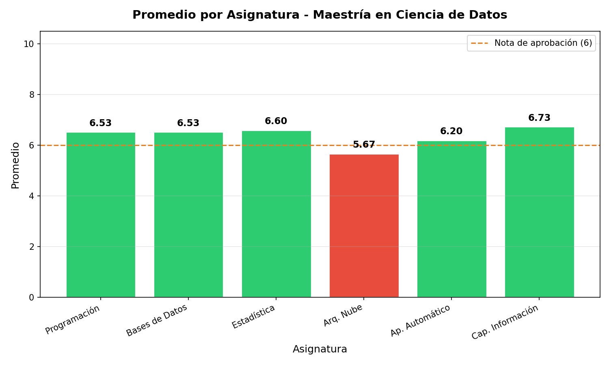

Descripción del proyecto
Proyecto académico desarrollado en el marco de la Maestría en Ciencia de Datos. El sistema permite leer información de estudiantes desde un archivo CSV, modelar cada estudiante como objeto, calcular promedios, determinar situación académica y generar estadísticas generales del grupo.
El objetivo fue aplicar programación orientada a objetos, manejo de datos, análisis académico y presentación de resultados mediante reportes y gráfico de barras.
Herramientas aplicadas
Python Pandas Matplotlib CSV POO Análisis de datos Estadística descriptiva VisualizaciónQué hace el programa
- Lee una base de datos de estudiantes desde un archivo CSV.
- Crea objetos de la clase Estudiante.
- Calcula promedio general con aplazos y sin aplazos.
- Determina situación académica: aprobado o reprobado.
- Calcula promedio por asignatura.
- Identifica asignaturas con mayor y menor rendimiento.
- Genera un gráfico de barras con los promedios por asignatura.
Resultado visual
Gráfico generado por el programa con el promedio por asignatura y la línea de referencia de aprobación.

Archivos del proyecto
Archivos reales del trabajo cargados dentro del portafolio.
Ver consigna / informe main.py estudiante.py analisis_academico.py estudiantes.csv grafico_rendimiento.png